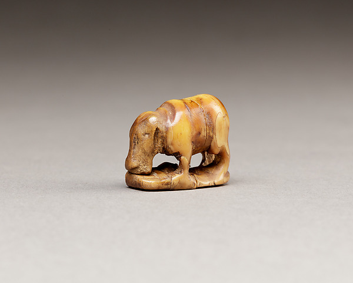

Figurine or amulet

2.5 cm
Dimension recorded by the museum · 1 in.
ca. 2960–2649 B.C.
Early Dynastic Period
The base is visible; “sled” is the collection’s word.
- Title in the collection
- Figurine or amulet of a hippo on a sled
- Object number
- 26.7.1299
- Geography
- Egypt
- Medium in the collection record
- Hippopotomus ivory
Image: The Metropolitan Museum of Art, object 26.7.1299, Public Domain.
Open the collection record ↗